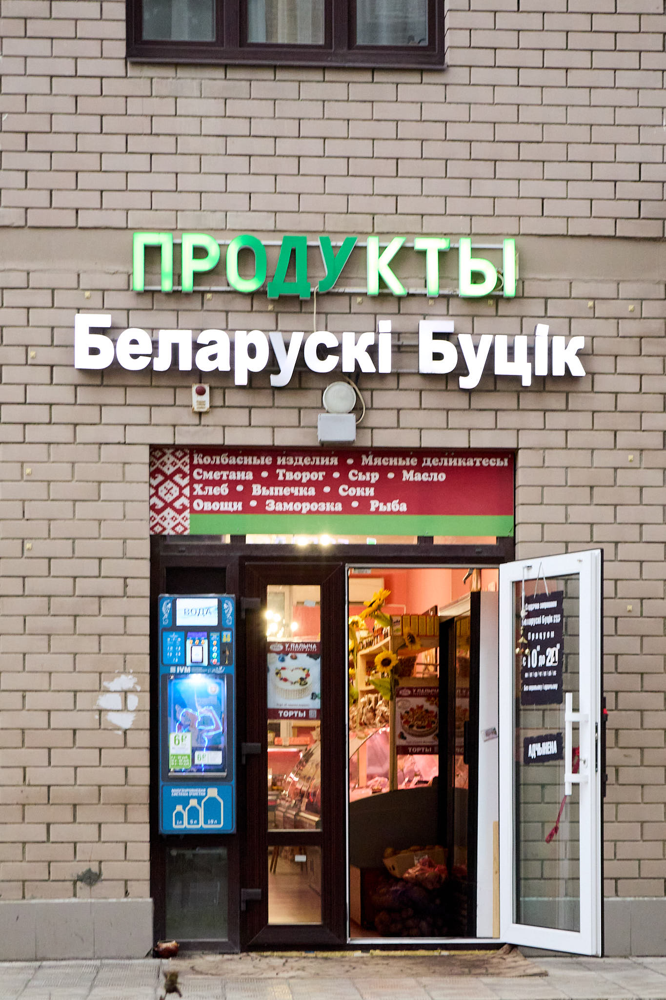

🌸 Друзья, напоминаем о себе! 🌸
«Беларускi Буцiк» — это место, где всегда ждут вас уют, забота и любимые товары. Мы обновили витрины!
Читать далее
Как выбрать качественную колбасу: советы от экспертов
Узнайте, на что обратить внимание при выборе колбасы, чтобы получить действительно качественный продукт.
Читать далее
Традиционные белорусские сыры: история и особенности
Погрузитесь в мир белорусского сыроделия и узнайте секреты производства традиционных сыров.
Читать далее